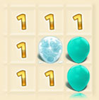

Нажимайте на шарики, чтобы лопнуть их.
Цифры указывают на то, сколько бомб рядом с этим полем.
Они включают бомбы со всех сторон, в том числе по диагонали.
В каком-то шарике бомба! Угадаешь, где она?!
Если уверен, что в шарике бомба - заморозь его (правый клик мышки или левый клик+шифт
При заморозе шариков счётчик оставшихся бомб уменьшается.
Разморозить шарик можно так же, как и заморозить.